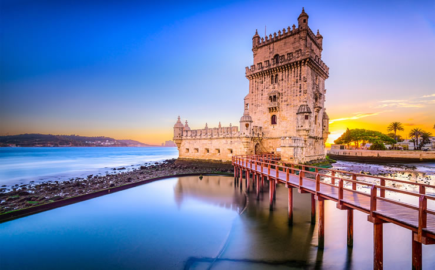
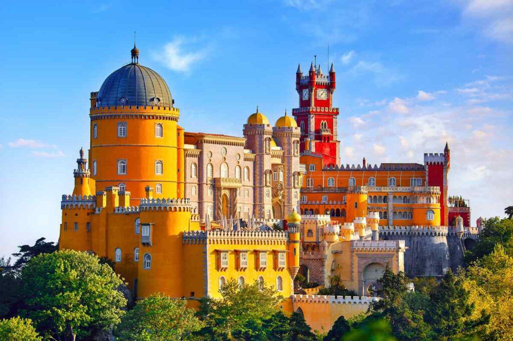
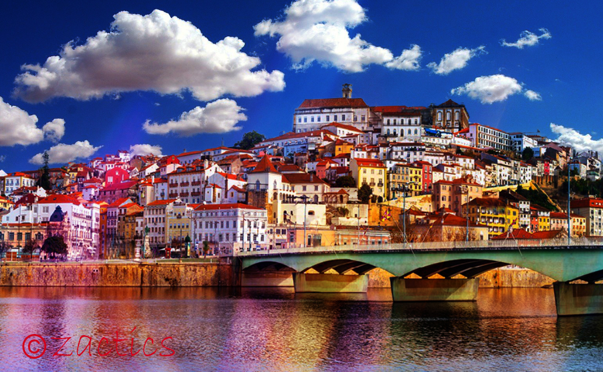

Atrações turísticas e patrimônio cultural Portugal é um país rico em atrações turísticas e patrimônio cultural, com uma história rica que se reflete em sua arquitetura, arte, culinária e paisagens naturais.
Lisboa:
- A capital de Portugal é uma cidade vibrante e histórica, repleta de atrações. Destacam-se o Castelo de São Jorge, o Mosteiro dos Jerónimos, a Torre de Belém e o Bairro Alto, conhecido por sua vida noturna animada.

Porto:
- A cidade do Porto, no norte de Portugal, é famosa pelo seu centro histórico, pelas caves de vinho do Porto e pela Ponte Dom Luís I que cruza o Rio Douro.

Sintra:
- Esta cidade pitoresca é conhecida por seus palácios e castelos deslumbrantes, incluindo o Palácio da Pena e o Castelo dos Mouros. Sintra é um Patrimônio Mundial da UNESCO.

Coimbra:
- Coimbra abriga uma das universidades mais antigas da Europa, a Universidade de Coimbra. O centro histórico da cidade é charmoso, e a Biblioteca Joanina é uma atração imperdível.

Évora:
- Localizada no Alentejo, Évora é famosa por suas ruínas romanas, como o Templo de Diana, e seu centro histórico, também classificado como Patrimônio Mundial da UNESCO.

Douro Valley:
- Essa região é famosa pelas vinhas em terraços nas colinas do Vale do Douro, onde são produzidos os vinhos do Porto. Os passeios de barco pelo rio são uma maneira popular de explorar a paisagem deslumbrante.

Madeira e Açores:
- Portugal inclui duas regiões autônomas no Atlântico: a Madeira e os Açores. Ambas são conhecidas por sua beleza natural, com vulcões, montanhas, florestas exuberantes e uma rica diversidade de flora e fauna.